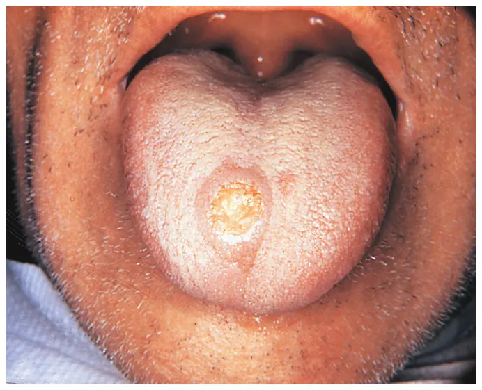
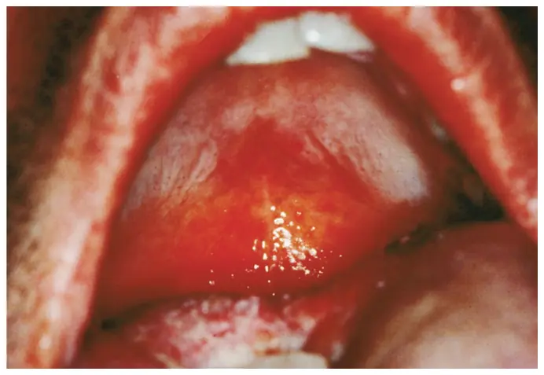

نسخه استخراجشده؛ ترجمه یا تأیید علمی انجام نشده است. وضعیت: captured
مرد ۲۸ سالهای از زخمی روی لب پایین میگوید که دو هفته است آنجاست و درد ندارد. زخم گرد، سفت و تمیز است و غدهی زیرفکی همان سمت سفت و بیدرد است. تبخال نیست؛ پس چیست؟

سیفلیس را باکتری ترپونما پالیدوم میسازد. بیشتر با تماس جنسی منتقل میشود، ولی بوسه، خون و انتقال از مادر به جنین هم ممکن است.
سیفلیس مادرزادی: ثنایای میانی دائمی میخیشکل با فرورفتگی لبهی انسیزال (دندان هاچینسون) و مولرهای توتمانند. تریاد هاچینسون: کراتیت بینابینی، ناشنوایی عصب هشتم و همین ناهنجاری دندانی.
درمان سیفلیس اولیه، ثانویه و نهفتهی زودرس: پنیسیلین G بنزاتین ۲٫۴ میلیون واحد عضلانی، یک نوبت. در آلرژی به پنیسیلین، بیرون از بارداری، داکسیسایکلین ۱۰۰ میلیگرم دو بار در روز به مدت ۲ هفته. آزمایش HIV هم توصیه میشود. تب، لرز و درد عضلانی در ۲۴ ساعت اول پس از درمان، بهویژه در سیفلیس زودرس، واکنش شناختهشدهی Jarisch-Herxheimer است.

در مطب: شانکر و پچ مخاطی بسیار عفونیاند، و خون و بزاق بیمار درماننشده هم. تا ضایعهی دهانی درمان نشده، درمان انتخابی را عقب بینداز. بیمار تحت درمان یا با سرولوژی هنوز مثبت را با اقدامات استاندارد درمان کن.
نوع سؤال: ساخت کلمه · 4 خانه
حروف منبع: م · و · گ · ا